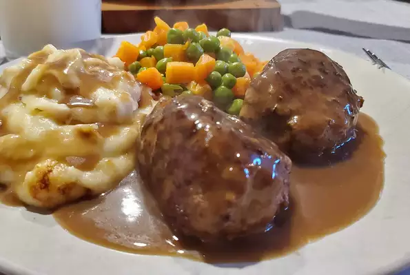

Odins Recipes
Odins Recipes
Danish Meatballs (Frikadeller)

This recipe comes straight from my mother-in-law in Denmark. It's a little labor-intensive, but once you get the hang of it, you'll be addicted! Serve warm with a brown sauce, small red boiled potatoes, and sweet and sour cabbage. Better still, double the batch and have enough the next day to slice and place on toast with mayonnaise (open-faced, of course, the Scandinavian way)!
- Prep: 20 mins
- Cook: 30 mins
- Total: 50 mins
- Servings: 6 people; 1 God
- Yield: 24 meatballs
Ingredients
- ½ pound ground veal
- ½ pound ground pork
- ¼ cup milk, or as needed
- ¼ cup finely grated onion
- 1 egg
- ¼ cup bread crumbs, or as needed
- ¼ cup all-purpose flour
- ¼ cup seltzer water
- salt and pepper to taste
- ¼ cup margarine
Directions
- Mix the veal and pork together in a bowl, and stir in the milk, onion, and egg.
- Mix the bread crumbs into the meat then sprinkle in the flour, and knead well to mix.
- Stir in the seltzer water, season to taste with salt and pepper, and mix well. The mixture should be very moist, but not dripping.
- Chill the meat mixture for 15 to 30 minutes in the refrigerator, to make the meatballs easier to form.
- Heat the margarine in a large skillet over medium heat.
- To form meatballs, scoop up about 2 1/2 tablespoons of meat mixture with a large spoon, and form the mixture into a slightly flattened, oval meatball about the size of a small egg.
- Place the meatballs into the heated skillet, and fry for about 15 minutes per side, until the meatballs are well-browned and no longer pink in the center.
Nutritional Information
Per Serving: 246 calories; protein 15.7g; carbohydrates 8.4g; fat 16.3g; cholesterol 83mg; sodium 170.7mg.